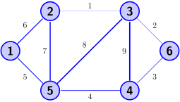
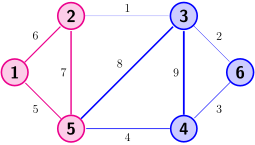
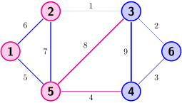

Spectral Clustering
Contents
Spectral Clustering#

Fig. 13 Graph clustering is relevant for example in social relation analysis#
In many real-world scenarios, data is best described not as a list of independent examples, but as a network of relationships. A prominent example arises in social networks, where users are connected based on interactions, friendships, or shared interests. Imagine analyzing user interactions on platforms like Instagram or LinkedIn, where individuals follow each other, like posts, or exchange messages. These interactions can be naturally represented as a graph: nodes correspond to users, and edges indicate some form of connection or similarity.
A common goal in analyzing such graphs is to identify communities — tightly connected groups of users that likely share common interests or roles. This task is known as graph clustering, and it helps uncover the hidden structure of the network. For instance, in a professional network like LinkedIn, clustering might reveal groups of people working in the same industry or region. On Instagram, it could identify clusters of users centered around specific topics, such as memes, politics, or influencers.
Unlike traditional clustering methods that operate on vector data, graph clustering works directly with the connectivity information. One powerful approach is spectral clustering, which uses the graph’s Laplacian matrix to map nodes into a geometric space where standard clustering algorithms like k-means can be applied. In a way, spectral clustering extends the idea of kernel k-means to more general applications of similarity matrices (that are not necessarily a kernel matrix), while making the algorithm more efficient and robust.
Similarity Graph Construction#
If we are not given a graph directly, we need to construct a similarity graph that captures how similar or related different data points are. This is done by defining a similarity matrix \(W\in\mathbb{R}^{n\times n}\), where each entry \(W_{ij}\) indicates the similarity between data points \(i\) and \(j\).
There are several common ways to define this similarity.
Epsilon-Neighborhood Graph#
The \(\epsilon\)-neighborhood graph connects two points if their distance is below the threshold \(\epsilon\):
Although the hyperparameter \(\epsilon\) is chosen well in this example, we can observe one of the drawbacks of the \(\epsilon\)-neighborhood graph: it doesn’t deal well with data that hasvarying levels of similarities. The points in the inner circle are in tendency closer to each other than the points on the outer circle. Correspondingly, the inner circle points are connected by many edges, but the outer circle points are not.
k-Nearest Neighbor Graph#
Alternatively, we can connect each point to its \(k\) nearest neighbors. Since this may result in an asymmetric matrix, we symmetrize it:

We see that the \(k\)NN graph can deal with the varying cluster densities better than the \(\epsilon\)-neighborhood graph: the inner and the outer circle are strongly connected. The intuitive idea for this behavior is that the really close neighbors are more likely found within a point’s cluster than in another cluster.
Formal Objective Definitions#
Once we have a similarity matrix WW that encodes the strength of connections between nodes, we can define what it means to find “good” clusters in the graph. There are two common objectives for graph clustering. We will discuss them on the basis of an example graph given by the similarity matrix (weighted adjacency matrix)
The weighted adjacency matrix indicates a graph that looks as follows:

Maximum Similarity Within Clusters#
One approach is to group nodes such that the total similarity within each cluster is maximized. Let \(Y\in\mathbb{R}^{n\times r}\) be a cluster indicator matrix, where each row indicates the cluster membership of a data point (exactly one nonzero entry per row). Then, the similarity within cluster \(s\) is computed by summing up all edge weights for nodes in cluster \(\mathcal{C}_{s}\), indicated by \(Y_{\cdot s}\):
Summing over all clusters gives the total within-cluster similarity:
The maximum similarity graph clustering problem is then given as follows.
Task (Maximum Similarity Graph Clustering)
Given a graph indicated by a symmetric, nonnegative similarity matrix \(W\in\mathbb{R}_+^{n\times n}\), and the number of clusters \(r\).
Find clusters indicated by the matrix \(Y\in\mathbb{1}^{n\times r}\) which maximize the similarity of points within a cluster
Return the clustering \(Y\in\mathbb{1}^{n\times r}\)
Example 23
We compute the similarity within the cluster \(Y_{\cdot s}=(1, 1, 0, 0, 1, 0)\):
The graph below visualizes the points belonging to cluster \(Y_{\cdot s}\) with the red nodes. We see how the similarity is computed by summing up the edges connecting nodes in this cluster: 5,6, and 7. Those edge weights are added twice, because we have an undirected graph, and every edge is counted once from point \(i\) to \(j\), and once from point \(j\) to \(i\).

Minimum Cut Between Clusters#
An alternative is to minimize the cut, which measures how strongly clusters are connected to the rest of the graph. For a given cluster \(\mathcal{C}_s\), the cut for this cluster sums up all the weight edges that would be cut if we cut out cluster \(s\) from the graph:
The total cut value of a clustering sums up all the weights that would be cut if we cut all clusters out of the graph:
The minimum cut graph clustering problem is then:
Task (Minimum Cut Graph Clustering)
Given a graph indicated by a symmetric, nonnegative similarity matrix \(W\in\mathbb{R}_+^{n\times n}\), and the number of clusters \(r\).
Find clusters indicated by the matrix \(Y\in\mathbb{1}^{n\times r}\) which minimize the cut of all clusters
Return the clustering \(Y\in\mathbb{1}^{n\times r}\)
Example 24
We compute the cut of cluster \(Y_{\cdot s}=(1, 1, 0, 0, 1, 0)\)
The graph below visualizes the nodes of the cluster and the edges that would have to be cut when we cut out cluster \(Y_{\cdot s}\). Note that we count every edge weight twice again, since we cut strictly speaking an edge from point \(i\) to \(j\) and also the edge from \(j\) to \(i\).

Optimization#
The maximum similarity and minimum cut formulations give us clear goals for clustering a graph, but solving them directly is difficult due to the discrete nature of the cluster indicator matrix \(Y\). Spectral clustering uses the same trick as kernel k-means to optimize the trace objective. This seems probably straightforward for the maximum similarity objective, but not so much for the minimum cut objective.
The Graph Laplacian#
Definition 36 (Degree Matrix and Graph Laplacian)
Given a graph indicated by a weighted adjacency matrix \(W\in\mathbb{R}_+^{n\times n}\).
The degree matrix is the diagonal matrix having the sum of all connecting edges for each node on the diagonal:
The unnormalized graph Laplacian, also called difference Laplacian is the matrix
In practice, the weighted adjacency matrix is often normalized. The corresponding Graph Laplacian is often denoted by
Example 25
We compute the degree matrix and the graph Laplacian for our example graph
Lemma 11 (Positive Definiteness of Laplacians)
Given a symmetric similarity matrix \(W\in\mathbb{R}^{n\times n}_+\), the Laplacian \(L=I_W -W\) is positive semi-definite.
Proof. Let \(0\neq v\in\mathbb{R}^n\), then
The positive definiteness of the Laplacian means in particular that all eigenvalues of the graph Laplacian are positive. The smallest eigenvalue of the graph Laplacian is zero, and it has a specific relationship to the graph.
Theorem 41 (Connected Components and Eigenvectors)
Given a graph indicated by the symmetric matrix \(W\in\mathbb{R}^{n\times n}_+\), then the indicator vectors of the connected components are eigenvectors of the Laplacian \(L=I_W-W\) to the smallest eigenvalue \(0\).
Proof. For every connected component there exists an order of columns and rows such that \(W\) has a block-diagonal form:
The indication of connected components by the first eigenvector(s) of the negative graph Laplacian creates a bridge from the spectrum of the graph Laplacian to the clustering objective. For any binary cluster indicator matrix \(Y_{\cdot s}\) the similarity of points within that cluster are at most the sum of all the degrees of nodes in that cluster:
To overcome this, we assume the graph has only one connected component (or is artificially connected using small edge weights), so that we can go beyond trivial solutions and focus on uncovering meaningful cluster structure.
Spectral clustering is commonly introduced as a relaxation of the minimum cut objective. Instead of recovering the first eigenvectors of \(−L\), which correspond to connected components, it uses the next \(r\) eigenvectors (those with the smallest non-zero eigenvalues). These eigenvectors form a continuous embedding of the data. k-means is then applied to this embedding to discretize the solution and obtain clusters. However, this interpretation only tells half the story. In this narrative, it’s not clear why k-means is used for the discretization of eigenvectors. This makes sense however, when we derive the equivalence of graph clustering approaches to kernel k-means.
Relationship to Kernel k-means#
First, we observe that the minimum cut and the maximum similarity objective are equivalent for specific choices of the adjacency matrix:
Theorem 42 (Minimum Cut and Maximum Similarity Equivalences )
Given a symmetric similarity matrix \(W\in\mathbb{R}^{n\times n}_+\), the degree matrix \(I_W\) and the Graph Laplacian \(L=I_W-W\), then the following objectives are equivalent:
Proof. Follows from the fact that
The maximum similarity objective is equal to the kernel \(k\)-means objective. However, note that \(-L\) is not a kernel matrix (it’s negative semi-definite). But we can make \(-L\) into a kernel, that doesn’t change the objective.
Corollary 8 (Graph Clustering and k-means equivalence)
Given a symmetric matrix \(W\in\mathbb{R}^{n\times n}_+\), having the smallest eigenvalue \(\lambda_{min}\). If \(\lambda_{min}\) is nonnegative, then the maximum similarity graph clustering objective is equivalent to the kernel k-means objective for \(K=W\).
If \(\lambda_{min}\) is negative, then the maximum similarity graph clustering objective is equivalent to the kernel k-means objective with \(K=W-\lambda_{min}I\).
Spectral Clustering Algorithm#
As a result, we have that the minimum cut objective is equivalent to kernel k-means with the kernel \(K=-L-\lambda_{min}I\). That is, we can compute a symmetric factorization of
Use only the eigenvectors \(V\) of \(K=V\Lambda V^\top\) instead of the scaled eigenvectors \(V\Lambda^{1/2}\). This might be due to the fact that the equivalence stated above was not clear when spectral clustering was introduced. The eigendecomposition of \(-L=V(\Lambda+\lambda_{min}I)V^\top\) has only negative eigenvalues, which does not allow for the application of the square root.
Use a truncated approximation of \(K\approx V_{cdot \mathcal{R}}\Lambda V_{\cdot \mathcal{R}}^\top\) where \(\mathcal{R}={2,\ldots, r+1}\) excludes the first eigenvector that indicates the connected component. The truncated eigendecomposition speeds up the process and it allows k-means to focus the clustering search to a subspace that is relevant for clustering.
Pseudocode#
The pseudocode below details the method of spectral clustering.
Algorithm 17 (spectral clustering)
Input: data matrix \(D\), number of clusters \(r\), similarity matrix \(W\)
Require: the similarity matrix should indicate a connected graph
\(L\gets I_W-W\) #Compute Graph Laplacian - other graph Laplacians are also possible
\((V,\Lambda) \gets\)
TruncatedEigendecomposition\((L,r+1)\)\(A\leftarrow V_{\cdot\{2,\ldots, r+1\}}\) #Remove connected component
\((X,Y)\gets\)
kMeans\((A,r)\)return \(Y\)
Application to the Two Circles Dataset#
We have a look at the clustering obtained by spectral clustering and the embedding on the two circles dataset. The code below implements spectral clustering for the difference Laplacian. This code is not optimized for efficiency and uses here a full eigendecomposition instead of computing the truncated eigendecomposition directly (which is much faster).
from sklearn.cluster import KMeans
from sklearn import datasets
import matplotlib.pyplot as plt
from sklearn.metrics.pairwise import rbf_kernel
D, labels = datasets.make_circles(n_samples=500, factor=.5, noise=0.08)
W= rbf_kernel(D, D,gamma=0.3)
L= np.diag(np.sum(W,1))-W
lambdas, V = np.linalg.eig(L)
kmeans = KMeans(n_clusters=2,n_init=1)
A = np.abs(V[:,1:3])
kmeans.fit(A)
plt.scatter(D[:, 0], D[:, 1], c=kmeans.labels_, s=10)
plt.axis('equal')
plt.show()

The plots below indicate the ground truth clustering in the original feature space and in the transformed feature space, spanned by the second and third eigenvector of \(L\). Note that k-means clustering in the transformed feature space indicates directly the clustering in the original feature space.